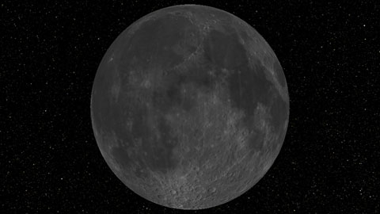
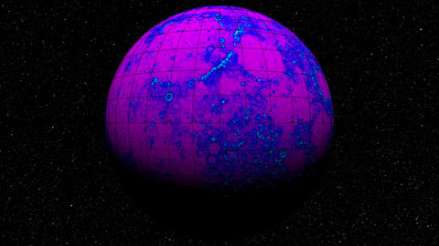
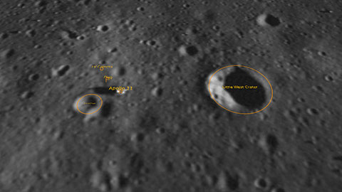
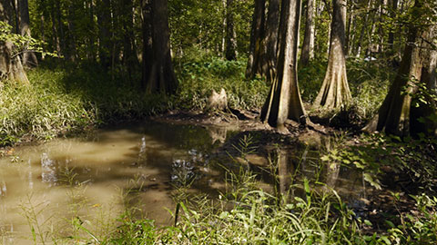
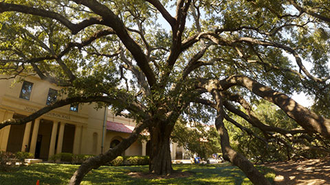
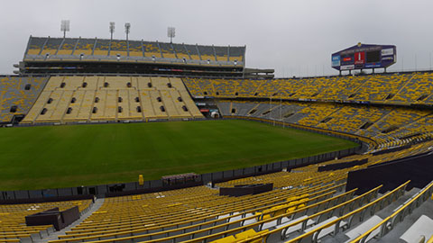
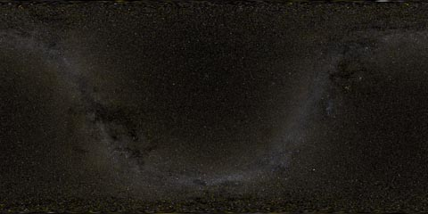

The following is a detailed listing of the ten examples bundled with Panoptic. These examples demonstrate most, if not all, of the capability of the shaders in the default bundle. With a basic understanding of XML, this document should provide enough background to modify the examples or to generate new ones.
Be advised, are not capable of handling archives larger than 2GB. If you have trouble, check the SHA1 sum before declaring the ZIP corrupt. If the checksum matches but the problem persists, try another ZIP utility.
The panoramic images were captured in and around Baton Rouge, Louisiana, using the CAVECam omnistereoscopic panoramic camera. They are compressed using lossy JPEG and come in left-right pairs.
|  |
Example 0 is the best scene for exploring the Moon and appreciating its beauty. The scene uses the vertex displacement shader to render a DTM as a height map. This DTM is a seamless merger of LOLA (which is good at the poles but bad at the equator) with GLD100 (good at the equator but bad at the poles). The WAC global mosaic is mapped onto this by the basic fragment shader. The DTM is normalized to a range of 1,728,240m to 1,748,170m to match the scale of the Moon one-to-one. The WAC is stretched a bit to brighten it.
<scene name="Global" vert="glsl/scm-displace.vert" frag="glsl/scm-basic.frag">
<image name="height" scm="DTM-254-7.tif" k0="1728240" k1="1748170"/>
<image name="color" scm="WAC-254-7.tif" k0="0.0" k1="3.0"/>
</scene>
|
 |
Example 1 emphasizes terrain, using the DTM three ways. First it is used as a displacement map as in the Global example, second as a scalar field colorized by a color mapping shader, and third as a normal map which enables shaded relief. The complete IAU lunar nomenclature is drawn atop in opaque black.
<scene name="Terrain" vert="glsl/scm-displace.vert"
frag="glsl/scm-relief-colormap-scalar.frag"
label="IAUMOON.csv" r="0" g="0" b="0" a="255">
<image name="height" scm="DTM-254-7.tif" k0="1728240" k1="1748170"/>
<image name="normal" scm="DTM-254-7-N.tif"/>
<image name="scalar" scm="DTM-254-7.tif"/>
</scene>
|
|  |
Example 2 shows shaded relief of a displaced surface as in the Terrain example, but this time with a separate color-mapped scalar data set applied. This is the Lunar Digital Slope Map, LDSM, a secondary product of the Laser Altimeter. A 10-degree graticule is drawn atop in opaque black.
<scene name="LDSM" vert="glsl/scm-displace.vert"
frag="glsl/scm-relief-colormap-scalar.frag"
label="graticule.csv" r="0" g="0" b="0" a="255">
<image name="height" scm="DTM-254-7.tif" k0="1728240" k1="1748170"/>
<image name="normal" scm="DTM-254-7-N.tif"/>
<image name="scalar" scm="LDSM-254-4.tif" k0="0.0" k1="2.0"/>
</scene>
|
 |
Example 3 works the same as a the LDSM example, but shows Mini-RF data instead. Mini-RF is particularly notable for its presentation of information deep in the craters near the poles, where the light of the sun can never reach. Mini-RF is only available near the poles, and the shader fills in gray shaded relief elsewhere.
<scene name="MiniRF" vert="glsl/scm-displace.vert"
frag="glsl/scm-relief-colormap-scalar.frag">
<image name="height" scm="DTM-254-7.tif" k0="1728240" k1="1748170"/>
<image name="normal" scm="DTM-254-7-N.tif"/>
<image name="scalar" scm="Mini-RF-CP-254-7.tif"/>
</scene>
|
|  |
Example 4 demonstrates the overlay of high-resolution data atop low-resolution, letting you explore detail in context. In this case, the low-resolution data is the DTM and WAC with a resolution around 100 meters per pixel, as above. The high-resolution data is a NAC view of the site of the landing of Apollo 11, with a resolution of around one half meter per pixel. Relevant features of the scene are labeled.
<scene name="Apollo11" vert="glsl/scm-displace.vert"
frag="glsl/scm-overlay.frag" label="Apollo11.csv">
<image name="height" scm="DTM-254-7.tif" k0="1728240" k1="1748170"/>
<image name="lower" scm="WAC-254-7.tif" k0="0.0" k1="3.0"/>
<image name="upper" scm="NAC_ROI_APOLLO11LOA-254-15.tif" k0="0.0" k1="1.65"/>
</scene>
|
 |
Example 5 is the most complex example in the set. It shows a NAC overlay of the site of Apollo 16 in the context of DTM and WAC, displayed with shaded relief. The Apollo 16 image is rich with human and rover tracks and gives stunning detail close-up. Viewed from afar, the shaded context provides the highest-fidelity and most information-dense presentation of the full globe of the moon currently available.
<scene name="Apollo16" vert="glsl/scm-displace.vert" frag="glsl/scm-shaded-overlay.frag">
<image name="height" scm="DTM-254-7.tif" k0="1728240" k1="1748170"/>
<image name="normal" scm="DTM-254-7-N.tif"/>
<image name="lower" scm="WAC-254-7.tif" k0="0.0" k1="4.0"/>
<image name="upper" scm="NAC_ROI_APOLLO16HIA-254-15.tif" k0="0.0" k1="2.0"/>
</scene>
|
|  |
Example 6 is an omnistereoscopic panorama of the cypress-tupelo forest in the Bluebonnet swamp. The scene includes one color image for each eye, with the channel mapping given explicitly. The zooming vertex shader enables magnification, allowing two gigapixels of data per eye to be explored.
<scene name="Bluebonnet0" vert="glsl/scm-zoom.vert" frag="glsl/scm-basic.frag">
<image name="color" scm="Bluebonnet-0-L-254-5-J.tif" channel="0"/>
<image name="color" scm="Bluebonnet-0-R-254-5-J.tif" channel="1"/>
</scene>
|
 |
Example 7 is another high-resolution omnistereoscopic panorama captured at the Bluebonnet swamp.
<scene name="Bluebonnet3" vert="glsl/scm-zoom.vert" frag="glsl/scm-basic.frag">
<image name="color" scm="Bluebonnet-3-L-254-5-J.tif" channel="0"/>
<image name="color" scm="Bluebonnet-3-R-254-5-J.tif" channel="1"/>
</scene>
|
|  |
Example 8 is an omnistereoscopic panorama captured on the campus of Louisiana State University. This image may be challenging to view, as the sun shines upon one eye but not the other. Also, small discrepancies in the panoramic stitching result in a number of false 3D artifacts.
<scene name="LSU1" vert="glsl/scm-zoom.vert" frag="glsl/scm-basic.frag">
<image name="color" scm="LSU1-L-254-5-J.tif" channel="0"/>
<image name="color" scm="LSU1-R-254-5-J.tif" channel="1"/>
</scene>
|
|  |
Example 9 is an omnistereoscopic panorama captured in Tiger Stadium on the campus of Louisiana State University. Note the men changing lightbulbs.
<scene name="Tiger2" vert="glsl/scm-zoom.vert" frag="glsl/scm-basic.frag">
<image name="color" scm="Tiger-Stadium-2-L-254-5-J.tif" channel="0"/>
<image name="color" scm="Tiger-Stadium-2-R-254-5-J.tif" channel="1"/>
</scene>
|
|  |
The background of the planetary examples is a rendering of the Synthetic All-Sky Panorama.
<scene name="MilkyWay" vert="glsl/scm-basic.vert" frag="glsl/scm-basic.frag">
<image name="color" scm="synaspan-254-4.tif" k0="0.0" k1="1.0"/>
</scene>
|